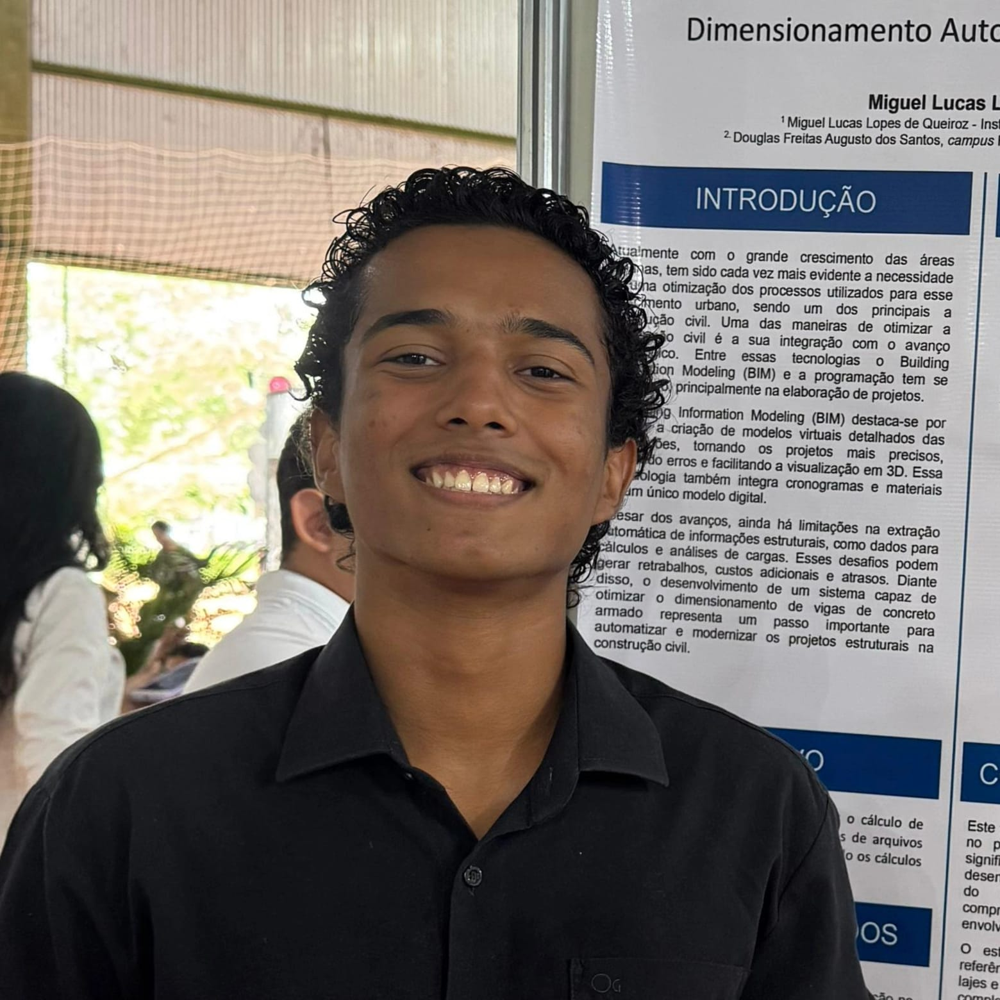

AutoCAD
- —Projetos arquitetônicos
- —Cortes
- —Fachadas
Portfólio Profissional
Técnico em Edificações
Transformo ideias em projetos precisos: do levantamento em campo à modelagem 3D em BIM, com rigor técnico em cada detalhe construtivo.

Formação
IFTO · Edificações
01 — Sobre mim
Sou estudante do curso Técnico em Edificações no Instituto Federal do Tocantins (IFTO), e minha paixão é transformar ideias em modelos 3D precisos, capazes de comunicar com clareza cada decisão de projeto.
Minha formação acontece entre três ambientes que se complementam: o canteiro de obras, onde entendo como o projeto se materializa; o laboratório, onde aprendo a controlar a qualidade dos materiais; e o software de projeto, onde tudo se integra em desenhos e modelos BIM confiáveis.
02 — Conhecimentos técnicos
Softwares e competências de campo que aplico no desenvolvimento e na documentação de projetos.
03 — Portfólio
Uma seleção de trabalhos que reúnem modelagem, levantamento e controle de qualidade.
Modelo 3D não encontrado
Adicione o arquivo em assets/modelo-casa.glb
Modelagem BIM completa de uma residência unifamiliar, com estudo de volumetria, definição de esquadrias, cobertura e geração automática da documentação técnica: planta baixa, cortes e fachadas.
Escritório Modelo · IFTO
Levantamento métrico de edificação existente, com medições em campo, registro fotográfico e croquis, posteriormente digitalizados no AutoCAD para gerar o as-built com plantas, cortes e fachadas.
CAP Júnior
Atuação no controle de qualidade do concreto em laboratório: moldagem e cura de corpos de prova, ensaios de abatimento (slump test) e de resistência à compressão.
04 — Contato
Estou aberto a oportunidades de estágio, projetos e parcerias na área de edificações.